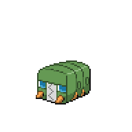
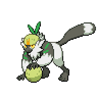

Location
Sheridan Sidequests

| Quest | Reward |
| Help Plaza Quest 1: The Hidden Library 2 |  550, Water Stone, Good Rod, Ancient Book/Blue Moon Ice Cream 550, Water Stone, Good Rod, Ancient Book/Blue Moon Ice Cream |
| Help Plaza Quest 2: Stolen Cargo! | 800, 10 Gourmet Treats |
| Help Plaza Quest 3: Cute Pokemon! | Rare Candy, Pancham |
| Help Plaza Quest 4: Get an Item! | 850, Castelia Cone, (Blue Moon Ice Cream) |
| Help Plaza Quest 5: Battle Me Again? | 1600, Eevee |
| Karrina's Gang Wars | Houndour |
| Ditto Hunt - Start | Herbal Team, Carbos, and start a long-term sidequest for Ditto |
| Zumi's Sidequest | Nothing yet, just a Pokemon Check |
Help Plaza Quest 1: The Hidden Library 2

To accept this request, you would have needed to complete the first part from the Help Plaza in East Gearen City. Once you've accepted the request, the same backpacker we helped back in East Gearen City will be right outside the Help Plaza, so go ahead and talk to him. He'll let us know the three possible locations for the library: Under Chrisola Hotel, near Dr. Jenkel's Lab, and in Gearen Park. We'll have to investigate the three locations in this order, so go ahead and take TRUCKGUY back to East Gearen City and go over to Chrisola Hotel.
In front of Chrisola Hotel, you'll met Karen from the Save Starly request back in East Gearen City. She's also looking for the Hidden Library, so after you let her know the other locations she'll head off to Dr. Jenkel's Lab. Go ahead and follow her there, and after cutscene head over to Gearen Park. Talk to Karen in front of the fountain, and after a little while you'll finally get access to the Hidden Library.
There are wild Pokemon here, but its only Unown. This is actually a decent place to train up your weaker Pokemon, since Unown will only have Hidden Power and the higher level ones give a decent amount of Exp. Anyways, you can pick up the bright green book behind the pillar. You should be picking up any colored books along the way, but there'll be a list of them later. For now, head into the library proper. Ignore everything else and head upstairs. Before you go into the large gate, pick up a Charcoal
 on the right side. Enter the gate, and head straight through to talk to Karen. Watch the scene play out, and she'll give you an Ancient Book for your troubles. At this point, we can go back to the backpacker to complete the quest, but we can explore the library a little more.
on the right side. Enter the gate, and head straight through to talk to Karen. Watch the scene play out, and she'll give you an Ancient Book for your troubles. At this point, we can go back to the backpacker to complete the quest, but we can explore the library a little more.
First, with the Ancient Book you can now read the Garufan prophecies that was behind Karen, so do so if you're interested. In the same room, you can find a Good Rod on the left side of the area. Back in the main room, on the first floor near the right set of stairs is a Zygarde Cell. There's another room on the bottom right side that leads to TM77 - Psych Up.
 The final thing we can do here is help the floating Elgyem pick up the scattered books. Near the Elgyem is an Ether
The final thing we can do here is help the floating Elgyem pick up the scattered books. Near the Elgyem is an Ether
| Book | Location |
Book 1 |
Library Entrance |
Book 2 |
Main Lobby - First Floor |
Book 3 |
Main Lobby - First Floor |
Book 4 |
Main Lobby - First Floor |
Book 5 |
Main Lobby - First Floor |
Book 6 |
Main Lobby - Second Floor |
Book 7 |
Prophecy Room - Left Side |
Book 8 |
Prophecy Room - Right Side |
Book 9 |
Bottom Left Room |
Once you've found all the books, be sure to save. Interact with the colored section of the bookshelf and put the books back in its place. Elgyem will be happy with you, and force you into a battle. It will be at level 1, so be very careful if you want to catch it.
With all that done, we can head back to Sheridan and talk to the backpacker out front. He'll see you have the Ancient Book and ask you to give it to him. I would recommend not giving it to him as having it on us will allow us to get an extra Pokemon later, but if you do you can get a Blue Moon Ice Cream. Either way, he'll run off to the library and our job will be done. Claim your reward at the Help Plaza.
As a sidenote, now that we have a Good Rod we can fish for Skrelp at Gearen Sewers. This is one of the Pokemon Zumi needs for her PokeDex sidequest. Since you're in the area, you can go ahead and fish it now but we'll also cover Zumi's sidequest later in this section
Help Plaza Quest 2: Stolen Cargo

There's no particular requester for this one, so just head on over to Oceana Pier. Make sure you have a strong team with you. In Oceana Pier, talk to the guy in front of the warehouse on the bottom right. He'll let you into the warehouse, and you'll have to find a way to get deeper into the warehouse. If you stepped on the center platform, your Pokemon will be electrocuted and most will get KO'd, so I wouldn't recommend doing that. Instead, go over to the right and talk to Gang Member Usain,
 who has an Electrike with Discharge, which can swich the field between the Factory Field and a Short-Circuit Field. Once you've shut down the factory, you can get over deeper into the warehouse without losing your Pokemon's health.
who has an Electrike with Discharge, which can swich the field between the Factory Field and a Short-Circuit Field. Once you've shut down the factory, you can get over deeper into the warehouse without losing your Pokemon's health.
Once inside, the gang members will start to battle you. Venam will appear and help you out with this battle.
Gang Member Samwell and Gang Member Jacksin

Mr. Mime, Level 23 |
Psychic | Dazzling Gleam |
Porygon, Level 24 |
Normal | Discharge |
|---|---|---|---|---|---|
| Psybeam | Signal Beam/td> | ||||
| Fairy | --- | --- | |||
| --- | --- | ||||
|
Alolan Graveler, Level 24 |
Rock | Discharge |

Seaking, Level 24 |
Water | Water Pulse |
| Smack Down | Signal Beam | ||||
| Electric | Self-Destruct | Protect | |||
| --- | --- | ||||
|
Flaffy, Level 24 |
Electric | Discharge | --- | --- | --- |
| Power Gem | --- | ||||
| Fury Swipes | --- | ||||
| --- | --- | ||||
|
Reward: 480
|
|||||
This will probably be your first experience with changeable fields. Many fields in this game can be created, destroyed, or changed by moves. In this case, Discharge will cause the field to alternate between a Factory Field and a Short-Circuit Field. Both these fields have similar effects, but there are some differences. For example, while the field is Short-Circuit, Dark-type moves will be stronger. If the Factory Field is active, Steel-type moves will get a boost. Either way, this battle won't be too hard as its effectively a 12v5, and their Pokemon will often knock out their partner with Discharge.
Once the battle is complete, head out to the left side. Change the direction of the electrified panel with the terminal, and then go pick up TM09 - Venoshock.
 With that, you can go back to the Help Plaza and collect your reward.
With that, you can go back to the Help Plaza and collect your reward.
Help Plaza Quest 3: Cute Pokemon

For this request, we will need to have an Aipom in our party to traded away. If you don't have one or don't want to trade yours, you can catch on on Route 2. They will be static encounters during the mornings and daytime, or you can also find them by using Headbutt on the available trees. Either way, once you have one, talk to the blue-haired lady just south of the battlefield in Sheridan Arena. She'll ask you to trade your Aipom, and in return you'll get a Pancham. With that, the quest is complete so you can grab the money reward at the Help Plaza.
Help Plaza Quest 4: Get an Item!

Before you do this request, I would recommend you first complete the Ditto Hunt Sidequest first, as you won't have to backtrack twice. Regardless, for this quest you would need to head over to Route 2, specifically to the Kecleon Shop. If you have started the Ditto Hunt sidequest, you'll can talk to the second Kecleon on top, and it will run away. We'll catch up to it again later. Save the game, and then interact with the item in the green Pokeball. If you have the money, feel free to pay for it. But if you don't, you'll be transported to Kecleon's Dungeon.

You'll be able to break out, but make sure to look at the map. You'll have to memorize the path to get to the green or yellow square on top. In the map above, you would need to take the middle door then the right most door. This map will change, so if you get an impossible map you can reset the game and try again. If you manage to get to the yellow door, you'll be able to get either a Shiny Stone, Ice Stone, or Dusk Stone randomly. To complete the quest, you don't actually need to survive the dungeon, but doing so will let you get an extra reward.
Once you've broken out, you'll find yourself in Sheridan Village. The requester is waiting in front of the Help Plaza. If you made it out of the dungeon alive, you'll get a Blue Moon Ice Cream. If not, the requester will simply thank you for trying. You'll get a Casteliacone and some cash as a reward from the Help Plaza.
Help Plaza Quest 5: Battle Me Again?

When you accept this request, Novae will approach you. She'll let you know that she couldn't reserve Sheridan Arena, so you'll be battling in the last room of Amethyst Cave. Set up your best team, and head on over to battle Novae. This battle will be fought in the Crystal Cavern.
Wanderer Novae

Trumbeak, Level 27 |
Normal | Pluck |
|---|---|---|
| Fury Attack | ||
| Flying | Rock Smash | |
| Rock Blast | ||
|

Charjabug, Level 27 |
Bug | Spark |
| Acrobatics | ||
| Electric | Crunch | |
| Dig | ||

Sandygast, Level 27 |
Ghost | Bulldoze |
| Giga Drain | ||
| Ground | Rock Tomb | |
| Hypnosis | ||
|
Lycanroc (Day Form), Level 28 |
Rock | Accelerock |
| Rock Tomb | ||
| Rock Climb | ||
| Bite | ||
|
Tsareena, Level 28 |
Grass | Trop Kick |
| Stomp | ||
| Teeter Dance | ||
| Attract | ||
|

Passimian, Level 29 |
Fighting | Bulldoze |
| Rock Smash | ||
| Brutal Swing | ||
| Work Up | ||
|
Reward: 1044
|
||
At this point in the game, this is a very, very hard battle. All her Pokemon out-level you at this stage, and she has two fully evolved Pokemon. The field is a double-edged sword for both you and Novae. On one hand, boosted Rock-type moves will allow you to virtually one-shot Trumbeak and Charjabug without much trouble. On the other hand, Sandygast and especially Lycanroc will hit incredibly hard with their Rock-type moves. A strong Water-type Pokemon can help get rid of both of them, but be careful of Sandygast's Water Compaction if you're using physical Pokemon.
Tsareena can hit hard, but it is quite slow and doesn't have a lot of coverage. If you have something that resists Grass, Tsareena could be used to heal up your Pokemon. Novae's Passimian is still the biggest threat on her team. Flying-type moves are weakened in the field, and it has Brutal Swing to counter Psychic-type Pokemon. A saving grace is that it does not carry Rock Tomb, so it actually can't hit your Flying-type Pokemon supereffectively. As with most aces, inflicting a status effect can help a lot. A Burn would effectively cripple it, and Paralysis helps you chip away as it will almost always be slower. Either way, this is a hard battle, but it is winnable with the right team. If you're struggling, you can always come back after the level limit is increased.
Once you defeat Novae, you can recieve an Eevee at the Help Plaza. Importantly, you can save before recieving the Eevee and reload until you get the one you want. If you get a female Eevee, you can breed it in Sheridan Village to get different Eeveelutions if you so choose.
Karrina Gang Wars

Head over to Karrina's base near the sewers in East Gearen City to start the sidequest. Talk to Karrina, and she'll tell you to meet up with the gang at Amethyst Cave. Head over to Amethyst Cave, and in the first room from Route 2 you'll find battles taking place all over the map. Head upstairs, then go across the waterfall and meet up with Karrina. You'll have to battle the gang leader in her stead.

Gang Member Charly
|
Machoke, Level 23 |
Fighting | Knock Off |
|---|---|---|
| Low Sweep | ||
| Revenge | ||
| Seismic Toss | ||

Mankey, Level 24 |
Fighting | Cross Chop |
| Pursuit | ||
| Swagger | ||
| Seismic Toss | ||
|
Vigoroth, Level 24 |
Normal | Slash |
| Uproar | ||
| Fury Swipes | ||
| Endure | ||
|
Reward: 240
|
||
After the battle, Karrina will thank you and give you a Houndour.
Ditto Hunt - Start

This sidequest was already covered in the main guide, but to recap:
- Enter the hours below Eldest's home and talk to the girlfriend there. Agree to rescue her boyfriend
- Head over to room before last in Amethyst Cave, interact with the vegetable box
- Catch the Solrock and save the boyfriend
- Head back to the house and watch the cutscene. You'll get a few items here.
- Head over to Route 2 and interact with the second Kecleon
Zumi's Sidequest

This is another recurring sidequest as we get access to more Pokemon. There's no new reward here just yet, but here's a list of the Pokemon we have access to so far:
- Dedenne - Grass in Route 2 during the mornings and daytime
- Carbink - Amethyst Cave random encounters
- Ledyba - Grass in Sheridan Village and Sheridan Arena during the mornings and daytime
- Skrelp - Fish in Gearen Sewers using a Good Rod. You'll be able to get a Good Rod while doing the The Hidden Library 2 Help Plaza Quest above.
<< Caratos Mountain Sheridan Gym Battle >>
×

Sheridan Village
×

Sheridan Arena
×

Amethyst Grotto
×

Route 2
×

Amethyst Cave - First Room
×

Amethyst Cave - Second Room
×

Amethyst Cave - Third Room
×

Amethyst Depths - Basement One
×

Amethyst Depths - Basement Two